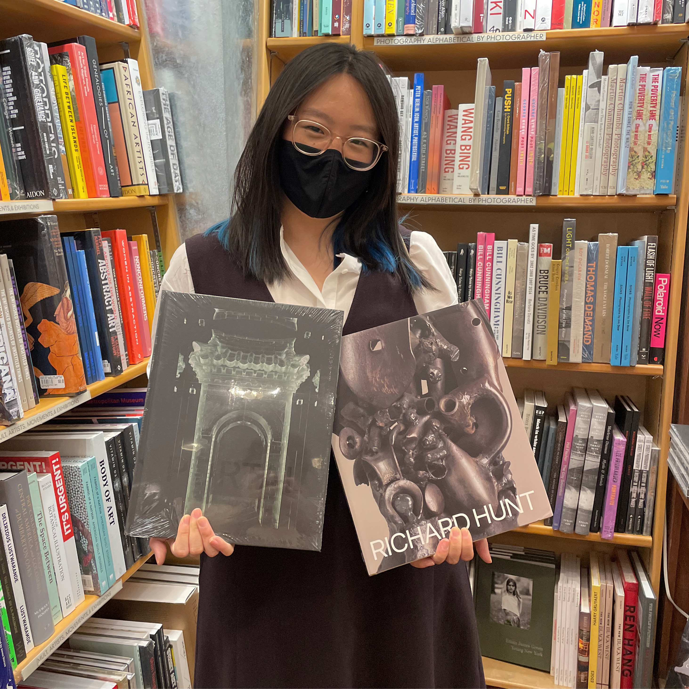

Julia Ma is a designer at Miko McGinty Inc. in Brooklyn, working on art books, exhibition graphics, and ephemera. Over the past seven years, she has worked with artists such as Do Ho Suh, Sheila Hicks, and Firelei Báez; museums like the Metropolitan Museum of Art, the American Museum of Natural History, and MoMA; as well as publishers like D.A.P. and Yale University Press. Julia is passionate about typefaces and letterforms and previously worked for Tobias Frere-Jones and in the Jonathan Edwards College Printing Press at Yale University. She is also a big collector of zines, books, vinyl records, and keychains.